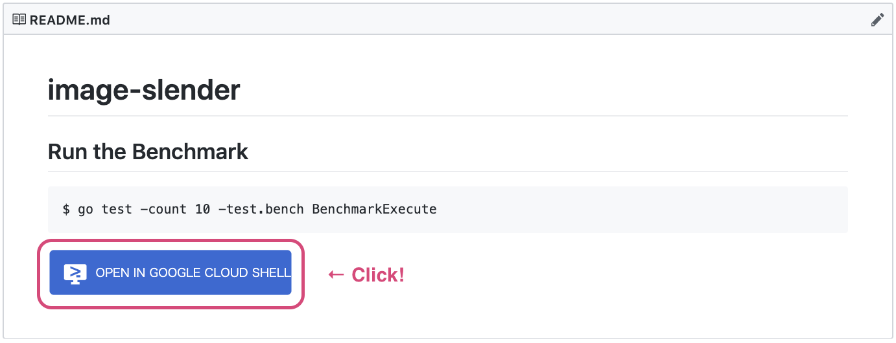
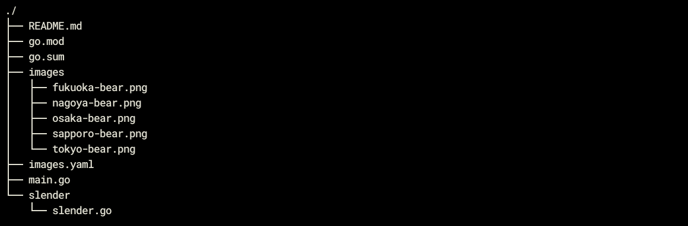
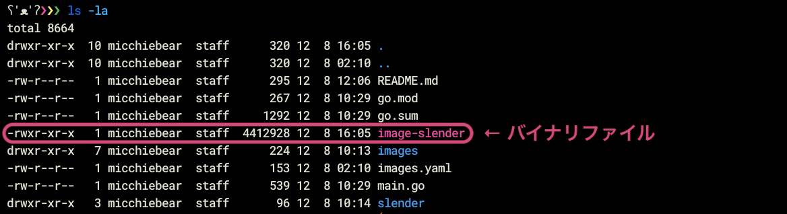
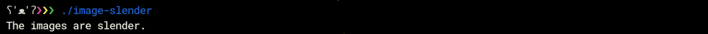
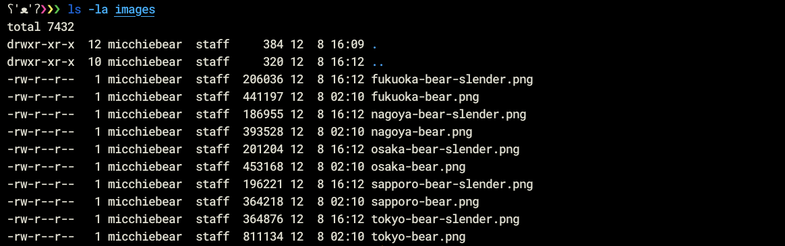
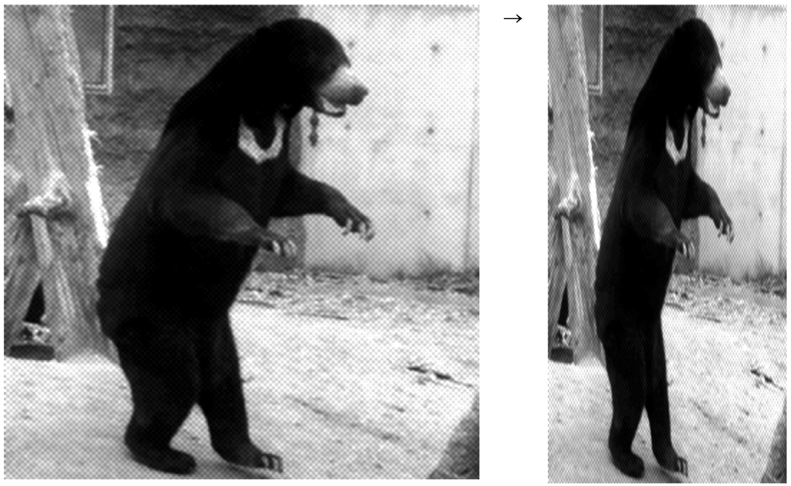

このコードラボでは、画像のリサイズ処理を題材に、通常の処理と並行処理の2パターンを書くことで、Go の並行処理を体験することができます。
下記の流れで開発を行います。
お使いのコンピューター上で Go の開発環境を用意していない方は、Google Cloud Shell というクラウド上の開発環境を利用することで、すぐに Go の開発をはじめることができます。
Google Cloud Shell の詳しい説明と使い方は Google Cloud Shell で Go の開発をはじめよう を参照してください。
GitHub からコードラボで利用するサンプルコードを取得しましょう。
$ git clone https://github.com/WomenWhoGoTokyo/codelab.git
Google Cloud Shell をご利用の方は、https://github.com/WomenWhoGoTokyo/codelab/tree/master/image-slender の「OPEN IN GOOGLE CLOUD SHELL」ボタンを押下してコードを取得してください。

コードが取得できたら、codelab/image-slender というディレクトリが作られていることを確認しましょう。
$ cd codelab/image-slender $ ls go.mod go.sum images images.yaml main.go main_test.go README.md slender
ファイルの構成は以下の通りです。

取得したサンプルコードを動かしてみましょう。
codelab/image-slender ディレクトリで、以下のコマンドを実行します。
$ go build -v -o image-slender
go build を実行すると、バイナリファイルが生成されます。

バイナリファイルを実行してみましょう。
$ ./image-slender
しばらくするとコンソールに 「The images are slender.」と表示されます。

images ディレクトリに *-bear-slender.png というファイルが新しく追加されていることが確認できます。

ためしに tokyo-bear.png と tokyo-bear-slender.png を見比べてみましょう。

画像のクマがスリムになりました。
このように、このサンプルコードは、images ディレクトリの画像を痩せさせ (リサイズし) 、別名で保存する処理を Go のプログラムで書いたものです。
image-slender の下に main_test.go というファイルを作成し、下記のように Go のプログラムを書きましょう。
codelab/image-slender/main_test.go
package main
import "testing"
func BenchmarkExecute(b *testing.B) {
b.ResetTimer()
for i := 0; i < b.N; i++ {
execute()
}
}これは、main.go に書かれている execute という関数のベンチマークを実行するための処理です。実行してみましょう。
$ go test -count 10 -bench BenchmarkExecute
ベンチマークの実行結果が出力されました。
goos: darwin goarch: amd64 pkg: github.com/mi-bear/image-slender BenchmarkExecute-8 1 15800638167 ns/op BenchmarkExecute-8 1 15737073630 ns/op BenchmarkExecute-8 1 15742299275 ns/op BenchmarkExecute-8 1 15739635788 ns/op BenchmarkExecute-8 1 15752764686 ns/op BenchmarkExecute-8 1 15728355016 ns/op BenchmarkExecute-8 1 15775978024 ns/op BenchmarkExecute-8 1 15731555275 ns/op BenchmarkExecute-8 1 15725556579 ns/op BenchmarkExecute-8 1 15711972716 ns/op PASS ok github.com/mi-bear/image-slender 157.465s
main.go を変更して、画像のリサイズを並行処理で実行してみましょう。
まずは、main.go の execute() を確認します。
codelab/image-slender/main.go
package main
import (
"fmt"
"os"
"github.com/jinzhu/configor"
"github.com/mi-bear/image-slender/slender"
)
.
.
.
func execute() error {
configor.Load(&Config, "images.yaml")
images := Config.Images
for _, image := range images {
image := image
slenderImage := slender.SlenderImage(image)
if err := slenderImage.Make(); err != nil {
return err
}
}
return nil
}images.yaml に設定した画像を、1件ずつリサイズ処理しています。
画像処理でエラーが発生した場合は、execute() を呼び出している main 関数にエラーを返却しています。
処理を実行している箇所を golang.org/x/sync/errgroup を利用して、平行処理に変更しましょう。
codelab/image-slender/main.go
package main
import (
"fmt"
"os"
"github.com/jinzhu/configor"
"github.com/mi-bear/image-slender/slender"
"golang.org/x/sync/errgroup" // 追加する
)
.
.
.
func execute() error {
configor.Load(&Config, "images.yaml")
images := Config.Images
eg := &errgroup.Group{}
for _, image := range images {
image := image
eg.Go(func() error {
slenderImage := slender.SlenderImage(image)
return slenderImage.Make()
})
}
if err := eg.Wait(); err != nil {
return err
}
return nil
}errgroup は、errgroup.Go の処理をすべて実行し終わるまで、errgroup.Wait が呼ばれることはありません。また、errgroup.Go でエラーが発生したら、そのうち一番最初のエラーを返却します。
更新したプログラムを保存したら、実行してみましょう。
まず新しくimportしたgolang.org/x/sync/errgroup パッケージを go mod コマンドを使ってインストールします。
$ go mod tidy go: finding module for package golang.org/x/sync/errgroup go: found golang.org/x/sync/errgroup in golang.org/x/sync v0.0.0-20210220032951-036812b2e83c
go buildしてバイナリファイルを実行しましょう。
$ go build -v -o image-slender $ ./image-slender
並行処理に書き直した Go のプログラムでベンチマークを実行してみましょう。
$ go test -count 10 -bench BenchmarkExecute
ベンチマークの実行結果が出力されました。
goos: darwin goarch: amd64 pkg: github.com/mi-bear/image-slender BenchmarkExecute-8 1 3426717180 ns/op BenchmarkExecute-8 1 3370627914 ns/op BenchmarkExecute-8 1 3379053786 ns/op BenchmarkExecute-8 1 3349740755 ns/op BenchmarkExecute-8 1 3383601348 ns/op BenchmarkExecute-8 1 3399993295 ns/op BenchmarkExecute-8 1 3425098299 ns/op BenchmarkExecute-8 1 3378263273 ns/op BenchmarkExecute-8 1 3413634149 ns/op BenchmarkExecute-8 1 3375049615 ns/op PASS ok github.com/mi-bear/image-slender 33.929s
改善前後の平均実行時間を比べてみると効果がわかります。
前:
157.465s
後:
33.929s
このコードラボでは、画像のリサイズ処理を題材に、通常の処理と並行処理の2パターンを書くことで、Go の並行処理を体験しました。
Go の並行処理は、結果が得られやすいので、今後も楽しく並行・効率化していきましょう。